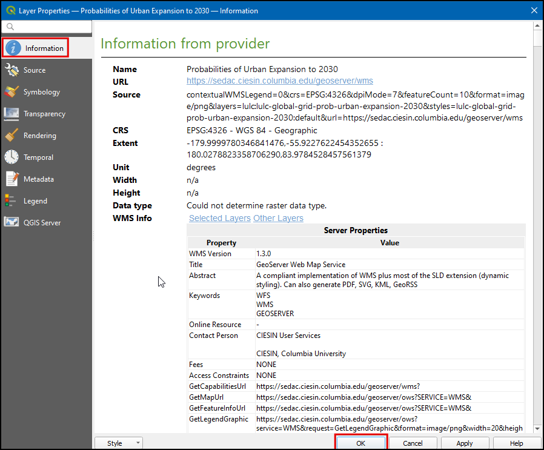

Utilisation de données WMS(QGIS3)¶
Vous avez souvent besoin de couches de données de référence pour votre fond cartographique ou pour afficher vos données. De nombreuses organismes publient des données en ligne qui peuvent être facilement utilisés dans les SIG. Une norme populaire pour la publication de cartes en ligne est appelée ** WMS (Web Map Service) **. C’est un meilleur choix pour utiliser des couches de référence car vous avez accès à des ensembles de données riches dans votre SIG sans avoir à télécharger ou à styliser les données.
Aperçu du travail à réaliser¶
Dans ce tutorial, nous allons télécharger une couche WMS de `Urban Expansion to 2030 <https://sedac.ciesin.columbia.edu/data/set/lulc-global-grid-prob-urban-expansion-2030>`_publié par le centre Socioéconomique de Données et Applications(SEDAC).
D’autres compétences à acquérir¶
Comment ajuster la transparence d’une couche et ajouter un widget de contrôle d’opacité dans QGIS.
Obtenir les données¶
Visitez le Global Grid of Probabilities of Urban Expansion by SEDAC <https://sedac.ciesin.columbia.edu/data/set/lulc-global-grid-prob-urban-expansion-2030> _, ces données contiennent des données probabilistes prévisions de l’évolution de la couverture terrestre urbaine mondiale de 2000 à 2030 à une résolution de 2,5 arc-minute. Cliquez sur: guilabel: Services de carte.

Copier l “URL du service WMS. Il s’agit de l’URL du service WMS qui héberge la couche de données.

Procédure¶
Ouvrez QGIS et cliquez sur: guilabel: Open Data Source Manager.

Dans la boîte de dialogue: guilabel: Data Source Manager, passez à: guilabel:` WMS / WMTS`, cliquez sur: guilabel: New.

In the Create a New WMS/WMTS Connection dialog box under Connection Details enter the Name as
SEDAC, and paste the copied URL in URL textbox. Click OK. If you get an error with the copied URL, try with the alternate URLhttps://sedac.ciesin.columbia.edu/geoserver/ows.
Note
Vous créez une nouvelle connexion à un service WMS - pas à une couche spécifique. Un seul service offre généralement plusieurs couches qui peuvent être ajoutées à votre projet.
Maintenant, dans la boîte de dialogue: guilabel: Data Source Manager, cliquez sur: guilabel:` Connect`. Toutes les couches disponibles seront chargées. Vous remarquerez différents identifiants répertoriés à côté des couches. L’ID `` 0 “” signifie que vous obtenez une carte de toutes les couches. Si vous ne voulez pas toutes les couches, vous pouvez agrandir la liste en cliquant sur: guilabel: icône ▸ et en sélectionnant la couche d’intérêt.

Pour ce tutoriel, nous nous intéressons à une couche spécifique. Recherchez `` Probabilités d’expansion urbaine jusqu’en 2030 “”. Sélectionnez la version * par défaut * de la couche d’expansion urbaine 2030.

Dans la section: guilabel: Encodage d’image, vous devez choisir un format d’image. Le format d’image est important et dépend du cas d’utilisation. Basé sur le point de vue de l’utilisateur, voici quelques conseils,
** Qualité **: La compression d’une image sous format PNG est meilleur si on la compare aux autres formats JPEG , TIFF, … Cela signifie que la qualité des PNG sera meilleure par rapport au JPEG. Si votre objectif principal est d’imprimer une carte, utilisez PNG.
** Vitesse **: puisque les images PNG ne sont pas compressées et donc ont une plus grande taille, elles prendront plus de temps à se charger. Si vous utilisez une couche dans votre projet comme couche de base et que vous devez effectuer un zoom /pan plusieurs fois, utilisez JPEG.
** Client Support **: QGIS prend en charge la plupart des formats, mais si vous développez des applications Web, les navigateurs ne prennent généralement pas en charge TIFF, vous devez donc choisir un autre format.
** Type de données **: Si vos couches sont principalement vectoriels, PNG donnera de meilleurs résultats. Pour les couches d’images, JPEG est généralement un meilleur choix.
Pour ce tutoriel, choisissez: guilabel: PNG comme format. Changez le: guilabel: Nom de la couche si vous le souhaitez et cliquez sur: guilabel:` Ajouter`.

Maintenant, une couche: guilabel: Probabilities of Urban Expansion to 2030 sera chargée dans le canevas. Utilisez les outils Zoom / Pan pour explorer la couche. Le fonctionnement du service WMS est que chaque fois que vous effectuez un zoom / pan, il envoie vos coordonnées au serveur et le serveur crée une image et la renvoie au client. Ainsi, il y aura un certain délai avant que vous voyiez l’image de la zone après avoir zoomé. Par conséquent, une connexion Internet est toujours nécessaire pour accéder à cette couche.

Maintenant, zoomez sur n’importe quel endroit connu et cliquez sur l’icône: guilabel: Identify Features dans la barre d’outils.

Cliquez sur n’importe quel pixel du canevas, une boîte de dialogue apparaîtra avec la valeur de la cellule. Il s’agit de la valeur du pixel dans la couche - qui représente la probabilité que le pixel soit urbanisé d’ici 2030. Puisque la couche n’est pas stockée localement, ces valeurs sont récupérées auprès du fournisseur de services. Vous pouvez mieux voir les résultats en sélectionnant: guilabel: Format comme` HTML` et: guilabel:` Afficher` comme `` Tree``.

Note
Les informations sont récupérées par * GetFeatureInfo *, il s’agit d’un appel standard WMS qui nous permet de récupérer des informations sur les fonctionnalités et les couvertures affichées dans une carte. Si la carte est composée de différentes couches et que GetFeatureInfo peut être invité à renvoyer plusieurs descriptions d’entités, * HTML / GeoJSON * est le format de fichier habituel dans lequel les informations sont récupérées.
Pour visualiser, les informations supplémentaires de lacouche, cliquez avec le bouton droit de la souris sur la couche et sélectionnez: guilabel: Properties ….

Dans la boîte de dialogue: guilabel: Propriétés de la couche, passez à l’onglet: guilabel:` Information` ici toutes les informations telles que * fournisseur de données *, * projections *, * étendue * peuvent être trouvées. Cliquez sur: guilabel: OK pour fermer la boîte de dialogue après l’exploration.
Dans QGIS: guilabel: Browser, recherchez: guilabel:` XYZ Tiles` et cliquez et faites glisser le `` OpenStreetMap`` sur le canevas.

Cliquez sur l’icône: guilabel: Ouvrir le panneau Style des couches et passez à: guilabel:` Transparence`.

Réglez: guilabel: Global opacity sur` `50% “”

Désormais en canevas, la couche Urban peut être explorée avec une référence géographique.

Pour avoir plus d’accès à la transparence du calque, faites un clic droit sur le calque et sélectionnez: guilabel: Propriétés ….

Dans la boîte de dialogue: guilabel: Propriétés de la couche, passez à l’onglet: guilabel:` Légende`, sous: guilabel: Widgets disponibles sélectionnez` Curseur d’opacité` et cliquez sur: guilabel: icône` Ajouter les widgets sélectionnés`. Cliquez sur: guilabel: OK.

Désormais, un widget curseur sera disponible pour contrôler l’opacité du calque.